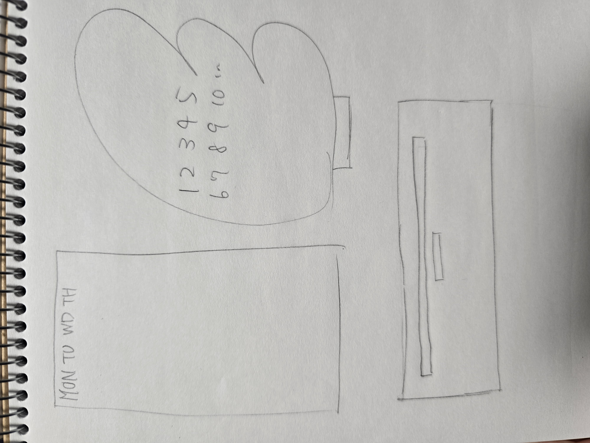
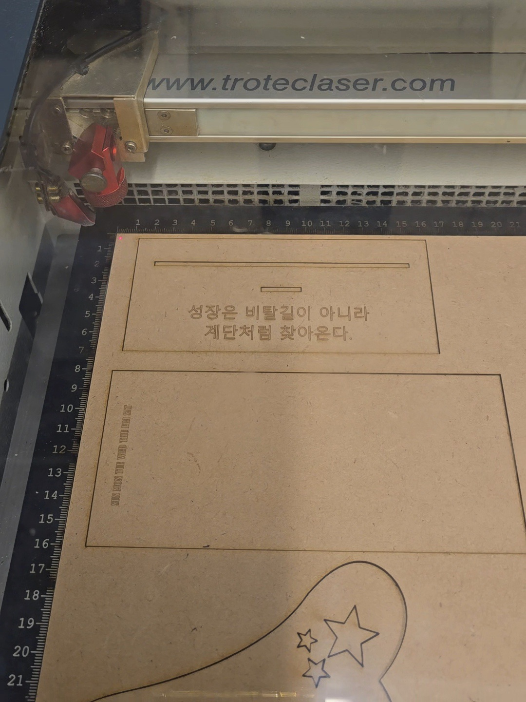
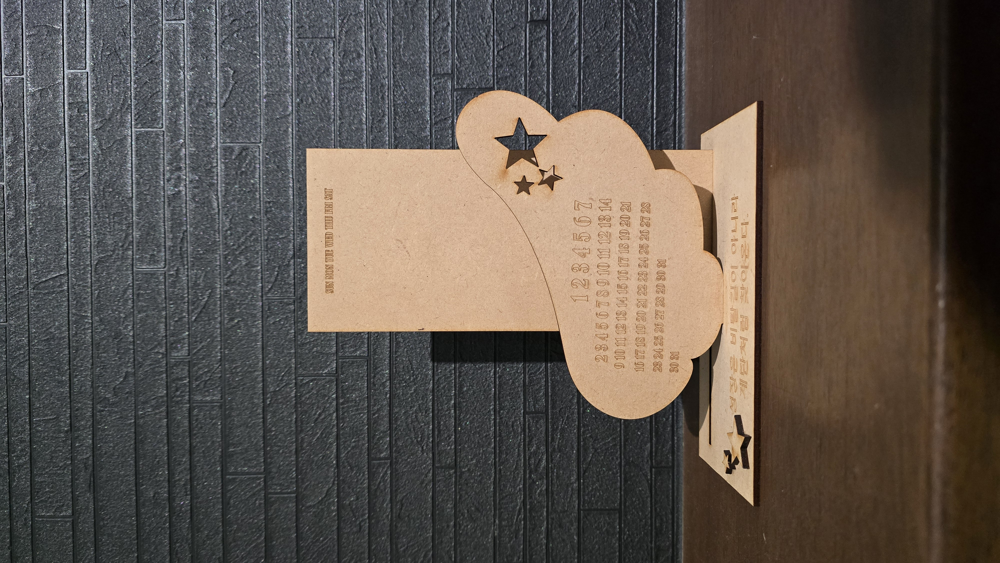
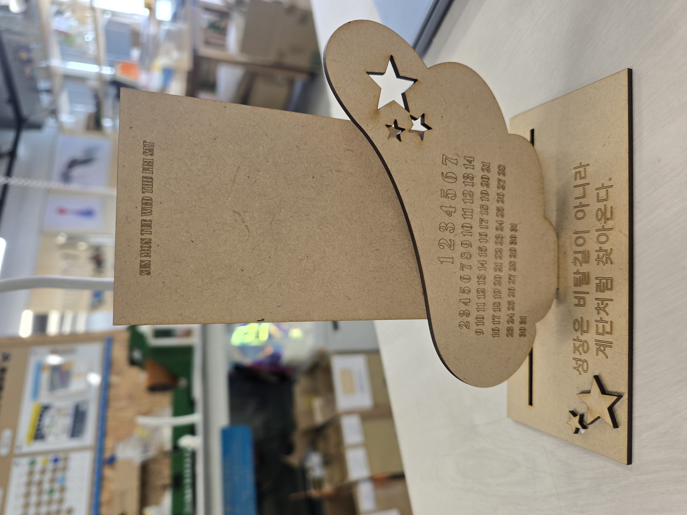

レーザーカッター
【スケッチと製作過程】



≪完成品≫


【作品の説明】
手動カレンダー
歳を重ねるにつれて一年が早く感じるジャネーの法則を身に染みて感じているので1日を大切にしたいと思い製作した。
カレンダーは毎日見るものなので自分の好きなコンセプトのウィッシュコアにしたくて羽の形にした。
土台には自分の好きな韓ドラの名言をいれて前向きになれるようにした。
【工夫した点】
羽の差し込み部分はMDFのピッタリサイズにして後ろの曜日が描かれた板を差し込む部分は0.1㎝サイズを小さくして各月に合わせて自分で移動させられるようにした。
日付をあえて多く入れたことで何月でも何年でも使うことができる。（左：11月 右：12月）
【設計ファイル】
DXFファイル
【改善点】
縦方向に日付をそろえようとすると日付の桁数によってどうしても真っ直ぐ揃えることが出来なかった。
なるべく合うように0,05㎜から調整したがこれが精いっぱいだった。
羽に対して後ろの移動式の板が大きすぎるのでもう少し縦を小さくすれはよかった。